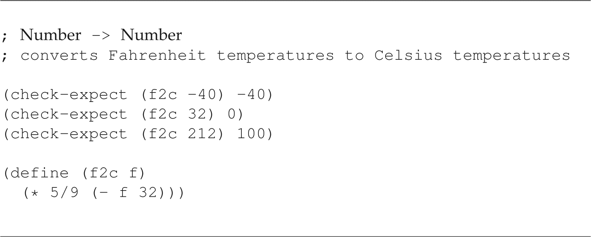
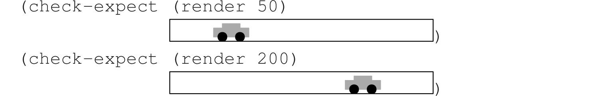
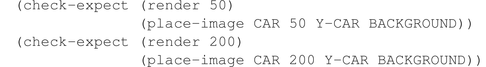

3.5 On Testing
Testing quickly becomes a labor-intensive chore. While it is easy to run small programs in the interactions area, doing so requires a lot of mechanical labor and intricate inspections. As programmers grow their systems, they wish to conduct many tests. Soon this labor becomes overwhelming, and programmers start to neglect it. At the same time, testing is the first tool for discovering and preventing basic flaws. Sloppy testing quickly leads to buggy functions—that is, functions with hidden problems—and buggy functions retard projects, often in multiple ways.
Hence, it is critical to mechanize tests instead of performing them manually. Like many programming languages, BSL includes a testing facility, and DrRacket is aware of this facility. To introduce this testing facility, we take a second look at the function that converts temperatures in Fahrenheit to Celsius temperatures from chapter 2.5. Here is the definition:
; Number -> Number
; converts Fahrenheit temperatures to Celsius
; given 32, expect 0
; given 212, expect 100
; given $-$40, expect $-$40
define (f2c f)
(* 5/9 ($-$ f 32)))
Testing the function’s examples calls for three computations and three comparisons between two numbers each. You can formulate these tests and add them to the definitions area in DrRacket:
(check-expect (f2c $-$40) $-$40)
(check-expect (f2c 32) 0)
(check-expect (f2c 212) 100)
When you now click the RUN button, you see a report from BSL that the program passed all three tests—and you have nothing else to do.
In addition to getting tests to run automatically, the check-expect forms show another advantage when tests fail. To see how this works, change one of the above tests so that the result is wrong, for example
(check-expect (f2c $-$40) 40)
When you now click the RUN button, an additional window pops up. The window’s text explains that one of three tests failed. For the failed test, the window displays three pieces: the computed value, the result of the function call (−40); the expected value (40); and a hyperlink to the text of the failed test case.
You can place check-expect specifications above or below the function definitions that they test. When you click RUN, DrRacket collects all check-expect specifications and evaluates them after all function definitions have been added to the “vocabulary” of operations. Figure 17 shows how to exploit this freedom to combine the example and test step. Instead of writing down the examples as comments, you can translate them directly into tests. When you’re all done with the design of the function, clicking RUN performs the test. And if you ever change the function for some reason, the next click retests the function.

Figure 17: Testing in BSL
Last but not least, check-expect also works for images. That is, you can test image-producing functions. Say you wish to design the function render, which places the image of a car, dubbed CAR, into a background scene, named BACKGROUND. For the design of this function, you may formulate the tests such as the following:

Alternatively, you could write them like this:

This alternative approach helps you figure out how to express the function body and is therefore preferable. One way to develop such expressions is to experiment in the interactions area.
For additional ways of formulating tests, see intermezzo 1.
Because it is so useful to have DrRacket conduct the tests and not to check everything yourself manually, we immediately switch to this style of testing for the rest of the book. This form of testing is dubbed unit testing, and BSL’s unit-testing framework is especially tuned for novice programmers. One day you will switch to some other programming language; one of your first tasks will be to figure out its unit-testing framework.